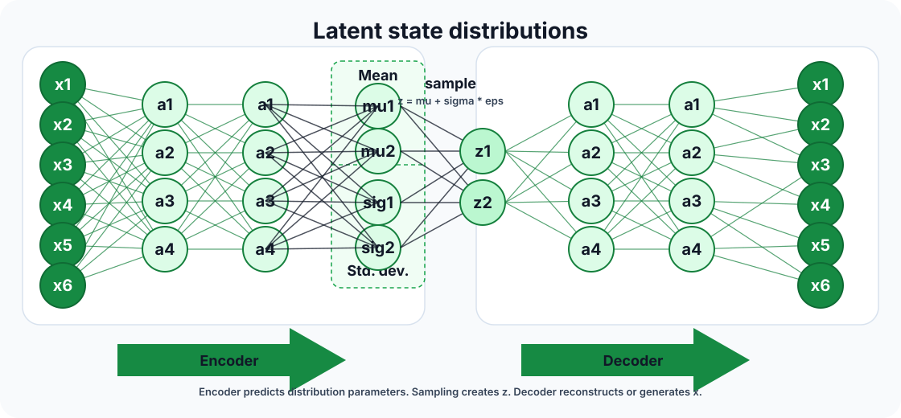

🎭 VAE变分自编码器
Variational Auto-encoders
A VAE is a generative model with a latent variable. Lecture 13 moves from discriminative modeling, $p(y\mid x)$, to modeling data itself, $p(x)$, then introduces an encoder and decoder that can be trained by backpropagation.
1. Concept Understanding
The goal is to learn a distribution that can generate realistic samples. Instead of modeling every pixel interaction directly, a VAE assumes data comes from a simpler hidden code $z$ sampled from a prior, then decoded into an observation $x$.
Operationally, a classifier asks “what label fits this input?”, while a VAE asks “how could this kind of input be produced?” In a conditional generative version the target is $p(x\mid y)$. After training, generation is simple: sample $z\sim\mathcal{N}(0,I)$ and pass it through the decoder.
- Prior: $p(z)$ is usually a simple Gaussian such as $\mathcal{N}(0,I)$.
- Decoder / generator network: $p_\theta(x\mid z)$ maps latent codes to data space.
- Encoder / inference network: $q_\phi(z\mid x)$ approximates the hard posterior over latents for a given input.

logvar. A latent sample $z=\mu+\sigma\odot\epsilon$ is then sent through the decoder to reconstruct or generate $x$. Reference: GeeksforGeeks VAE introduction.2. Plain-English Explanation
Think of $z$ as a short recipe card: “a digit with this slant, this thickness, this style.” The decoder turns the recipe into an image. The encoder looks at a real image and guesses which recipe could have produced it.
The “variational” part means we do not guess one exact recipe. We guess a distribution of plausible recipes, usually a Gaussian with mean and variance predicted by the encoder.
3. Core Intuition
VAEs work because real data often lives near a lower-dimensional manifold. The KL term keeps the latent space organized and sampleable; the reconstruction term keeps the decoder faithful to the input. Together, they create a latent space where nearby points tend to decode to similar samples.
Compared with a deterministic auto-encoder, a VAE stores each input as a small Gaussian cloud rather than one exact point. The decoder therefore learns to turn noisy, slightly perturbed latent codes into sensible outputs, which is why interpolation and new sample generation are possible.
If the KL term is too weak, the latent space becomes messy and hard to sample. If it is too strong, reconstructions become blurry or overly generic. The ELBO balances both forces.
A good latent space acts like a coordinate system for data factors. In face data, for example, nearby latent directions may track interpretable changes such as rotation, expression, or style, although the model is not guaranteed to align dimensions perfectly with human labels.
4. Key Equations
What it does. A visible sample can be produced by many possible hidden codes, so the model sums over every possible hidden explanation.
What it does. The encoder does not say one exact code caused the input; it gives a cloud of plausible latent codes.
What it does. Exact $\log p_\theta(x)$ is hard because it requires integrating over all $z$, so we maximize this lower bound instead. One term asks the decoder to reconstruct well; the other keeps the latent space organized enough to sample from.
What it does. Directly sampling from $q_\phi(z\mid x)$ would block the gradient path through the random draw. Reparameterization moves the randomness into a separate noise variable, so the network output remains a differentiable transformation.
What it does. The term is zero when a dimension exactly matches the prior: $\mu_j=0$ and $\sigma_j^2=1$.
5. Worked Examples
Example A · Lecture 13 latent variable picture
Source: Lecture 13, generative modeling motivation. Paraphrased.
A single Gaussian may not fit a complicated data distribution. Introduce a latent $z$ from a simple distribution, then let a nonlinear decoder map $z$ to the data space. A simple latent distribution can produce complex visible samples after the decoder transformation.
Example B · HW3 §4.1 approximation sources
Source: HW3 §4.1. Paraphrased.
Training a VAE involves several approximations: using $q_\phi(z\mid x)$ instead of the true posterior, restricting $q_\phi$ to a Gaussian family, estimating the reconstruction expectation with samples, optimizing the ELBO instead of exact log-likelihood, and using SGD on a nonconvex objective.
Example C · VAE vs deterministic AE
Source: Lecture 13 auto-encoder to VAE transition, paraphrased.
A deterministic auto-encoder maps an image to one code $z=f_\phi(x)$. A VAE maps it to a Gaussian $q_\phi(z\mid x)$, samples a nearby code, and trains the decoder to reconstruct from that noisy sample. This is the reason a VAE decoder can handle new latent samples more gracefully than a plain AE decoder.
Example D · HW3 §4.2 Gaussian KL
Source: HW3 §4.2. Paraphrased.
For $q=\mathcal{N}(\mu,\sigma^2)$ and $p=\mathcal{N}(0,1)$, plug the two Gaussian log densities into $E_q[\log q-\log p]$. The result is $\tfrac12(\mu^2+\sigma^2-\log\sigma^2-1)$; diagonal multivariate Gaussians sum this over dimensions.
6. Problem-Solving Tips
- Start every VAE derivation by naming $p(z)$, $p_\theta(x\mid z)$, and $q_\phi(z\mid x)$.
- When asked for the loss, write negative ELBO if the problem is in minimization form.
- For the KL term, check whether the model uses $\sigma$, $\sigma^2$, or
logvar. - For reparameterization, separate the random noise $\epsilon$ from learnable $\mu$ and $\sigma$.
- For generation questions, sample $z$ from the prior first, then decode with $p_\theta(x\mid z)$.
7. Common Mistakes
- Calling $q_\phi(z\mid x)$ the true posterior. It is an approximation.
- Dropping the KL term and turning the model into a plain autoencoder.
- Sampling $z$ directly in a way that blocks gradients through $\mu$ and $\sigma$.
- Using $\log\sigma$ where the formula expects $\log\sigma^2$.
- Forgetting that the reconstruction expectation is usually estimated with Monte Carlo samples.
8. Exam Focus
- Explain discriminative vs generative modeling.
- Compare a VAE with a deterministic auto-encoder: distribution in latent space versus single code point.
- Write and interpret the ELBO.
- Write the reparameterization trick.
- Derive or recall the closed-form Gaussian KL.
- Name the main approximations: variational posterior, ELBO lower bound, and Monte Carlo expectation.
- Explain why VAE latent interpolation tends to be smooth.
9. Quick Checklist
- I can name the prior, encoder, and decoder distributions.
- I can explain reconstruction term vs KL term.
- I can write $z=\mu+\sigma\odot\epsilon$ from memory.
- I can describe how to generate a new sample from a trained VAE.
- I can compute the diagonal Gaussian KL term.
VAE · Variational Auto-encoder
VAE 是带 latent variable 的 generative model。Lecture 13 从 discriminative modeling 的 $p(y\mid x)$ 转到建模数据本身的 $p(x)$，再引入 encoder / decoder，让整个模型可以用 backpropagation 训练。
1. Concept Understanding
目标是学到一个能生成真实样本的 distribution。VAE 不直接硬拟合所有像素关系，而是假设数据由一个更简单的隐藏变量 $z$ 生成：先从 prior 抽 $z$，再通过 decoder 生成 $x$。
操作上，classifier 问的是“这个 input 应该是什么 label？”，VAE 问的是“这种 input 可能怎么被生成？”如果是 conditional generative 版本，目标就是 $p(x\mid y)$。训练好后，生成新样本的流程很直接：sample $z\sim\mathcal{N}(0,I)$，再丢进 decoder。
- Prior：$p(z)$，通常是简单高斯 $\mathcal{N}(0,I)$。
- Decoder / generator network：$p_\theta(x\mid z)$，把 latent code 映射到 data space。
- Encoder / inference network：$q_\phi(z\mid x)$，近似给定输入 $x$ 后的 posterior。
logvar。接着用 $z=\mu+\sigma\odot\epsilon$ sample latent code，再交给 decoder reconstruction / generation。参考：GeeksforGeeks VAE introduction。2. Plain-English Explanation / 大白话理解
可以把 $z$ 想成一张很短的“生成配方”：这个数字往左斜一点，笔画粗一点，风格圆一点。Decoder 根据配方画出图片。Encoder 看一张真实图片，反推它可能来自哪些配方。
Variational 的意思是：我们不是猜一个精确配方，而是猜一团可能的配方分布。课堂里通常用 Gaussian，由 encoder 输出 mean 和 variance。
3. Core Intuition
VAE 有效，是因为真实数据常集中在低维 manifold 附近。KL term 让 latent space 有秩序、能从 prior 采样；reconstruction term 让 decoder 不能乱画。两者结合后，latent space 里相近的点通常会 decode 成相近样本。
和 deterministic auto-encoder 相比，VAE 不是把每个输入压成一个精确点，而是压成一个小 Gaussian cloud。Decoder 因此会被训练成能把 noisy / perturbed latent codes 也 decode 成合理输出，所以 interpolation 和新样本生成更自然。
KL 太弱，latent space 会乱，采样质量差；KL 太强，reconstruction 可能变模糊、过于平均。ELBO 就是在平衡“像原图”和“潜空间规整”。
好的 latent space 像数据因素的坐标系。比如人脸数据里，某些 latent direction 可能对应 rotation、expression、style 这样的变化；不过模型不保证每一维都自动和人类语义标签严格对齐。
4. Key Equations
这个公式在做什么？ 同一个可见样本可能由很多 hidden code 生成，所以模型要把所有可能解释都加总起来。
这个公式在做什么？ Encoder 不是说输入只对应一个精确 code，而是给出一团可能的 latent codes。
这个公式在做什么？ Exact $\log p_\theta(x)$ 要对所有 $z$ 积分，通常很难算，所以改为最大化这个 lower bound。一项要求 decoder 重建得好，另一项让 latent space 足够规整，方便从 prior 采样。
这个公式在做什么？ 如果直接从 $q_\phi(z\mid x)$ sample，随机抽样这一步会挡住梯度。Reparameterization 把随机性挪到独立噪声里，让网络输出部分仍然是可微 transformation。
这个公式在做什么？ 当某一维完全匹配 prior，即 $\mu_j=0$ 且 $\sigma_j^2=1$ 时，这一维 KL contribution 为 0。
5. Worked Examples
Example A · Lecture 13 latent variable 图景
来源：Lecture 13 generative modeling 动机，已转述。
一个 Gaussian 可能无法拟合复杂数据分布。引入 latent $z$ 后，可以先从简单分布采样 $z$，再让 nonlinear decoder 把它映射到 data space。简单 latent distribution 经过 decoder 后，就能生成复杂可见样本。
Example B · HW3 §4.1 VAE 的近似来源
来源：HW3 §4.1，已转述。
VAE 训练里有几类近似：用 $q_\phi(z\mid x)$ 近似真实 posterior，把 $q_\phi$ 限制成 Gaussian family，用采样估计 reconstruction expectation，优化 ELBO 而不是 exact log-likelihood，以及用 SGD 处理非凸目标。
Example C · VAE vs deterministic AE
来源：Lecture 13 从 auto-encoder 到 VAE 的过渡，已转述。
Deterministic auto-encoder 把图片映射到一个 code $z=f_\phi(x)$。VAE 把图片映射到 Gaussian $q_\phi(z\mid x)$，再从附近 sample 一个 code 交给 decoder 重建。正因为 decoder 训练时见过 noisy latent samples，它比 plain AE decoder 更能处理新的 latent sample。
Example D · HW3 §4.2 Gaussian KL
来源：HW3 §4.2，已转述。
当 $q=\mathcal{N}(\mu,\sigma^2)$、$p=\mathcal{N}(0,1)$，把两个 Gaussian 的 log density 代入 $E_q[\log q-\log p]$，得到 $\tfrac12(\mu^2+\sigma^2-\log\sigma^2-1)$；多维 diagonal Gaussian 就对每一维求和。
6. Problem-Solving Tips
- VAE 题一开始先写清楚 $p(z)$、$p_\theta(x\mid z)$、$q_\phi(z\mid x)$。
- 如果题目说 minimize loss，就写 negative ELBO。
- KL term 要看清代码/题目用的是 $\sigma$、$\sigma^2$，还是
logvar。 - Reparameterization 要把随机性 $\epsilon$ 和可学习的 $\mu,\sigma$ 分开。
- Generation 题先从 prior sample $z$，再用 $p_\theta(x\mid z)$ decode。
7. Common Mistakes
- 把 $q_\phi(z\mid x)$ 叫成 true posterior；它只是 approximation。
- 漏掉 KL term，把模型退化成普通 autoencoder。
- 直接 sample $z$ 导致梯度不能传回 $\mu,\sigma$。
- 公式需要 $\log\sigma^2$，却误用成 $\log\sigma$。
- 忘记 reconstruction expectation 通常是用 Monte Carlo samples 近似的。
8. Exam Focus
- 解释 discriminative vs generative modeling。
- 能比较 VAE 和 deterministic auto-encoder：latent space 里是 distribution，而不是单个 code point。
- 写出并解释 ELBO。
- 写出 reparameterization trick。
- 推导或默写 Gaussian KL closed form。
- 能说出主要近似来源：variational posterior、ELBO lower bound、Monte Carlo expectation。
- 解释为什么 VAE latent interpolation 通常比较平滑。
9. Quick Checklist
- 我能说出 prior、encoder、decoder 分别是什么。
- 我能解释 reconstruction term 和 KL term。
- 我能默写 $z=\mu+\sigma\odot\epsilon$。
- 我能描述 trained VAE 如何生成新样本。
- 我能计算 diagonal Gaussian KL。